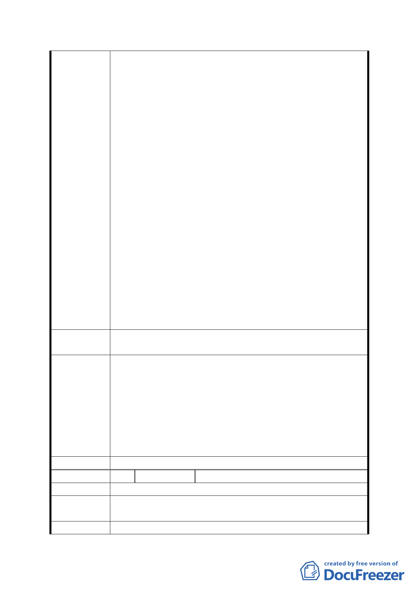

2. 此生活圈為「辛亥捷運生活圈」，以辛亥捷運及辛
亥國高中用地為中心，結合環狀之鄰里及北側山坡
地，進行老舊社區都市更新，建立一新興生活圈。
五、 建議位置：文山區興泰段一小段821地號
1. 道路用地已不切實際，修改為「公園」以符合現況。
2. 建設規劃為山林公園。
3. 柏油路拆除，重新規劃公園型式。
六、 建議位置：興泰里辛亥隧道南口西北側上方「翠池」
1. 翠池現為「保護區」，建議修改為「公共設施保留
地或公園」。
2. 建步道及自然工法之人工溪流，導水入山林公園或
地下水道系統，而非直接衝突辛亥路，造成機車通
行之危險。
3. 建立「生態溼地公園」辛亥路旁之空地及建物可作
為「生態教室」。
七、 建議位置：辛亥捷運站周邊臨辛亥路區域
1. 將住二／住三用地更改為「商業區」或「住3-1」。
2. 捷運空橋地下街及新設5處出口，以配合未來開放
空間（辛亥國高中用地）及山林公園（北側山坡地）
之規劃。
3. 加油站搬遷。
4. 人行道加寬。
第五次專案小組
審查結論
同編號 1
1.同編號 7、9、16、18 之說明。
2.另翠湖恢復蓄水對於辛亥隧道安全之影響仍有待調查評
估。
市府修正後 3.有關規劃完全中學之建議，業經本府教育局評估確認辛亥
回 應 說 明 國高中沒有設置需要。
4.本案「機關用地」及「防洪調節池用地」臨接辛亥路及萬
美街側皆須退縮留設 5 公尺寬之人行步道及帶狀開放空
間，以提供友善之人行空間。
委員會決議 同意依「市府修正後回應說明」辦理
編 號 22 陳情人 鐘譯樂里長
陳 情 理 由 墳墓影響都市發展，興泰里要發展。
建議
辦
法
1. 遷移墳墓以取代滯洪池。
2. 以辛亥站周邊整體發展來考慮，多設住宅區及商業區。
第五次專案小組 同編號 1
- 31 -